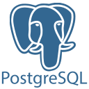
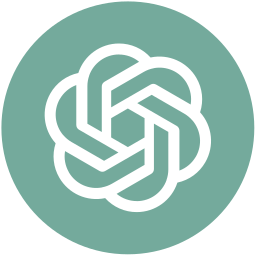

HTML
Mi Perfil
Tecnico Superior en Informática Industrial de la Fundación Infocal y estudiante de la UMSS. Durante mi formación adquirí experiencia en el desarrollo web utilizando Laravel, Spring Boot y Golang aplicando buenas practicas en desarrollo de backend. Me considero una persona proactiva y comprometida con habilidades tanto en programacion como en la resolucion de problemas.
Mi Stack
Tecnologias que utilice en algunos proyectos, algunas con mayor dominion que otras. Siempre intentado aprender mas al respecto
Frontend
He diseñado vistas basicas ademas de usar plantillas de trabajo gratuitas.
CSS
Backend
He desarrollado experiencia en desarrollo de APIs y logica de negocio con las siguientes herramientas orientadas al desarrollo web.
Laravel
PHP
Spring Boot
Java
MySQL

PostgreSQL
Herramientas de desarrollo
Incluyen entornos de desarrollo (IDEs), sistemas de control de versiones y material para optimizar el flujo de trabajo y colaboracion
Postman
GitHub
Git
Vite

Herramienta AI
Copilot GitHub (VS)
Gemini (Antigravity)